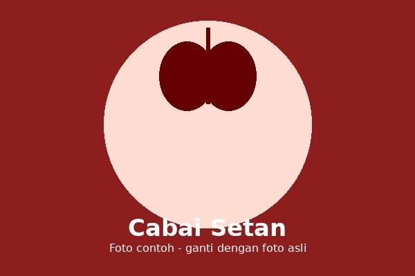

Cabai setan dikenal sebagai cabai rawit dengan tingkat kepedasan yang sangat tinggi. Ukurannya kecil, tetapi rasa pedasnya jauh lebih tajam dibanding cabai keriting.
Devil chili is a type of bird's eye chili known for its extremely high level of spiciness. It is small in size, but far hotter than curly chili.
Cocok ditanam di dataran rendah dengan suhu hangat dan sinar matahari yang melimpah.
Suitable for lowland areas with warm temperatures and abundant sunlight.